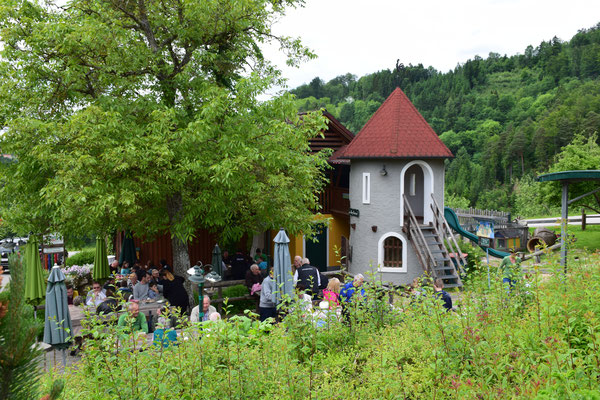
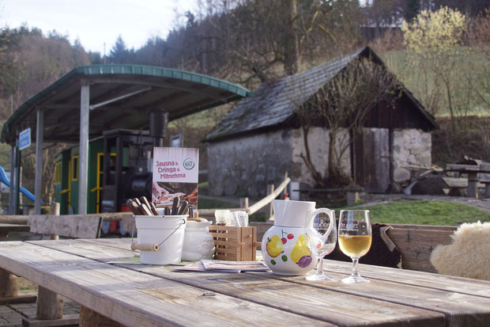

Mostschenke

Ankommen-Wohlfühlen-Lachen-Genießen
Alle Produkte werden selber erzeugt und frisch zubereitet.
Bei unserem Ab-Hof-Verkauf erhalten Sie die Bio-Köstlichkeiten auch zum Mitnehmen und auf Vorbestellung
gibts auch Frischfleisch an unseren Vermarktungstagen. Unsere umfangreiche Jausenkarte bietet für jeden
Gaumen den passenden Genuss. Der hausgemachte Most und die edlen Schnäpse laden zu geselligem Beisammensein ein.